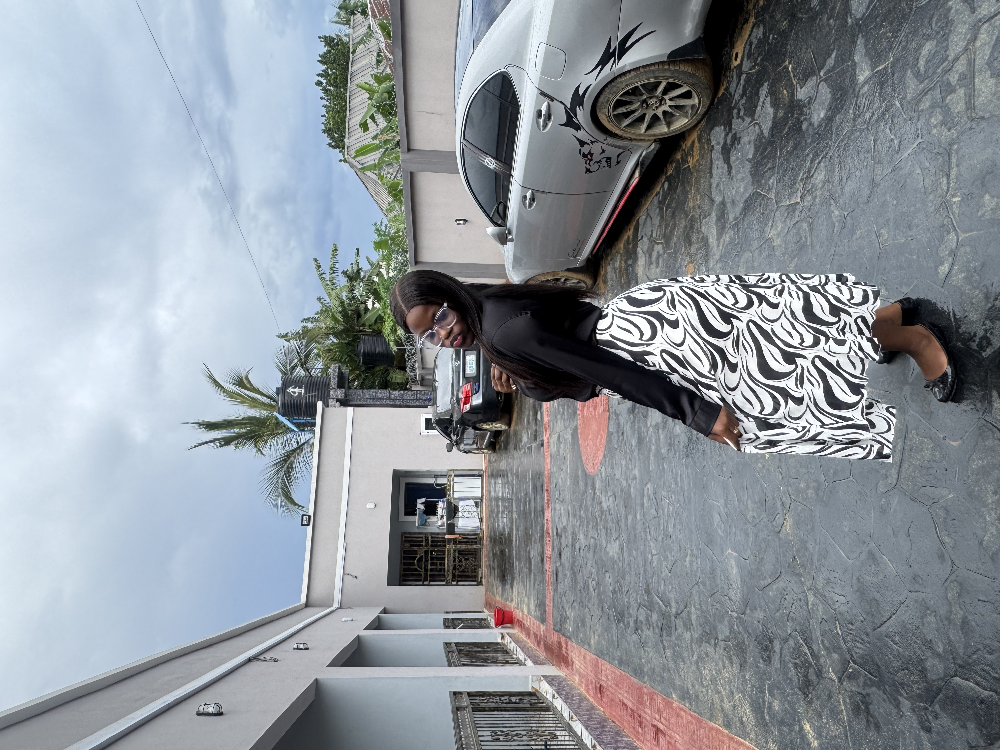

Lauryn Manuchim Echichinwo | WDD 130
My name is Lauryn Manamnuchim Echichinwo. I am a motivated and purpose-driven individual with a strong interest in personal growth, learning, and making a positive impact. I value creativity, integrity, and continuous improvement, and I approach new opportunities with curiosity and dedication.